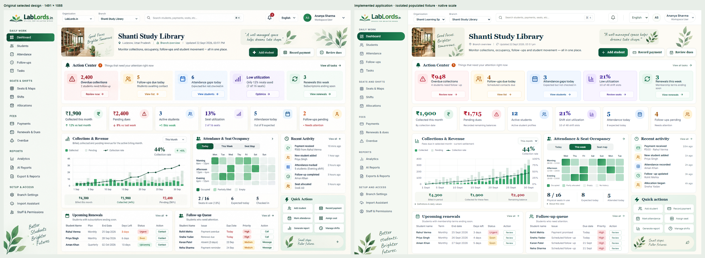
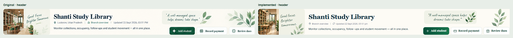
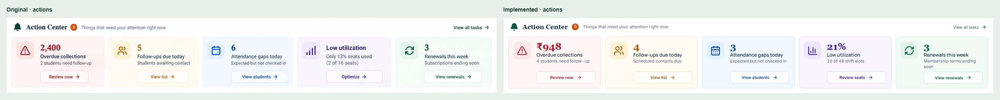
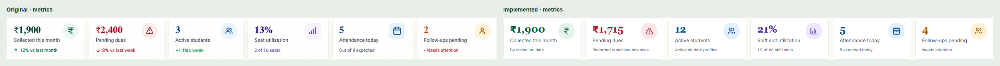
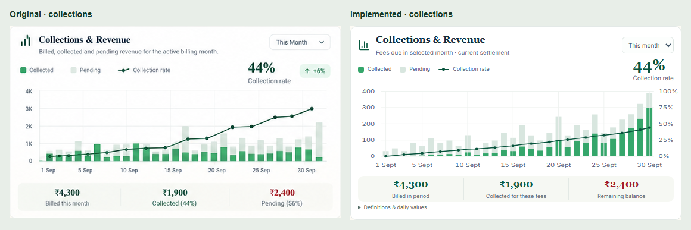
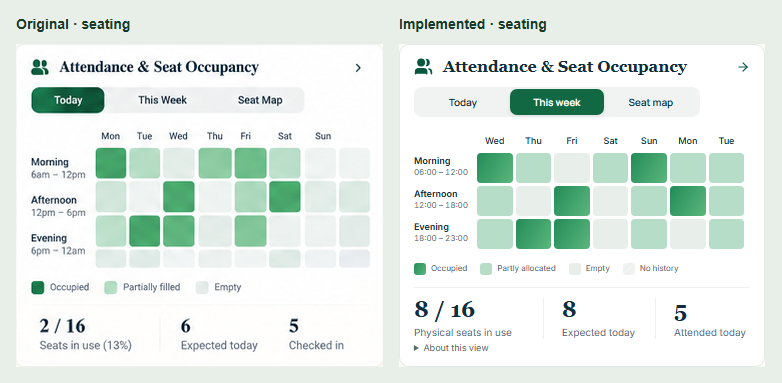
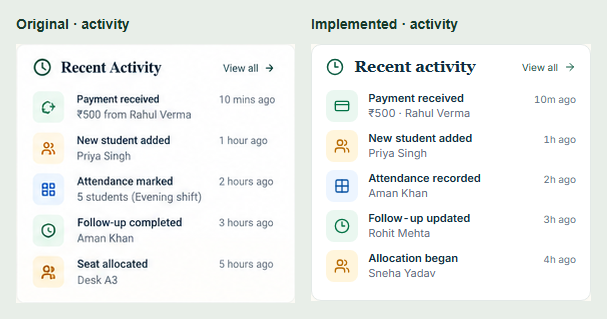
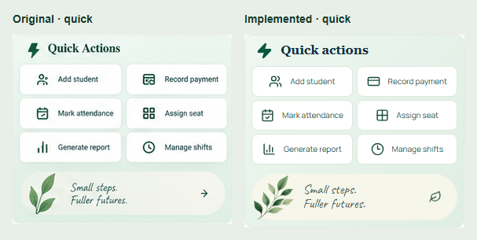

The application render uses a labelled isolated synthetic fixture. Both sides were captured at 1491px, 100% zoom, device scale 1. The 21px fixture ribbon is removed from the comparison only. Final acceptance belongs to the owner.

header · original left, implementation right, same native scale

actions · original left, implementation right, same native scale

metrics · original left, implementation right, same native scale

collections · original left, implementation right, same native scale

seating · original left, implementation right, same native scale

activity · original left, implementation right, same native scale

quick · original left, implementation right, same native scale

worklists · original left, implementation right, same native scale